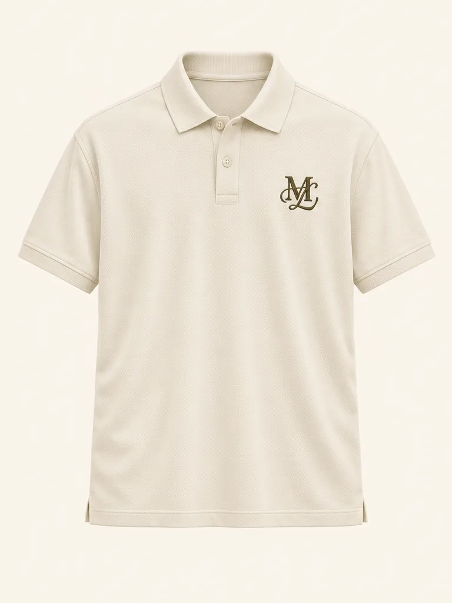
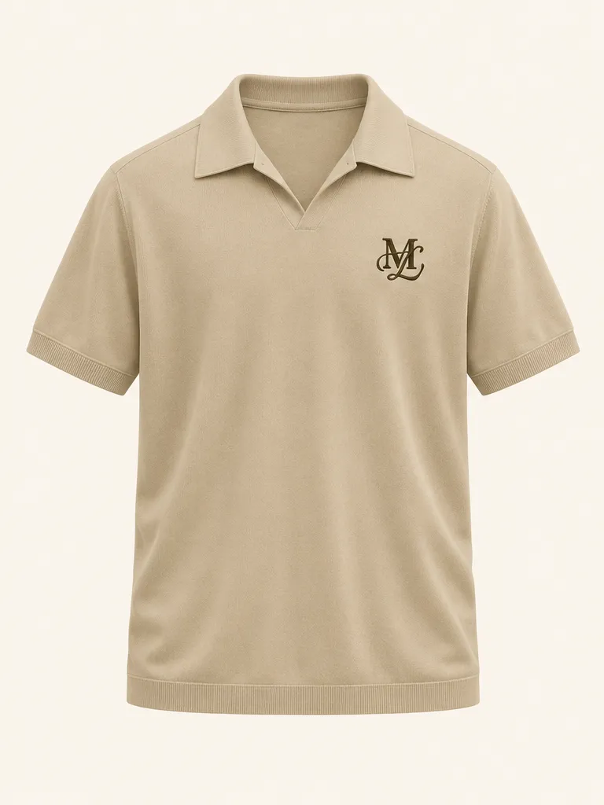
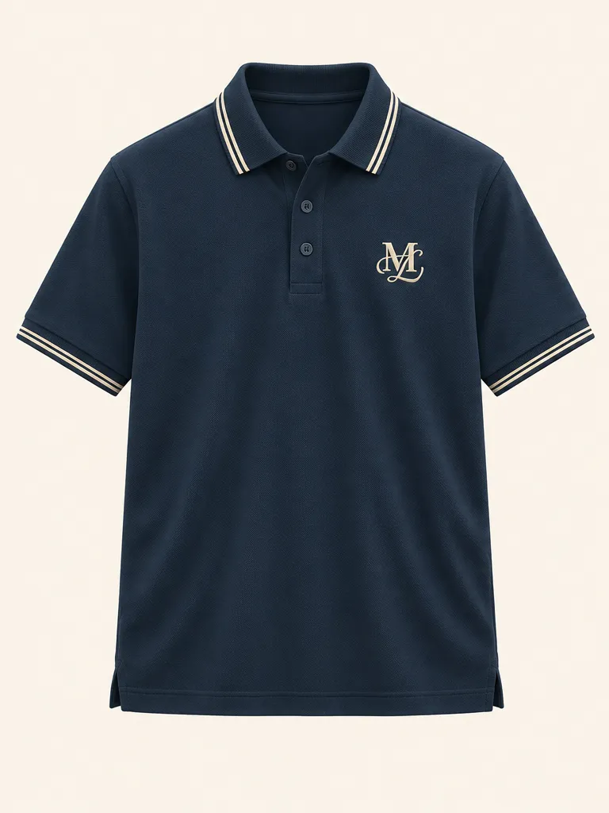
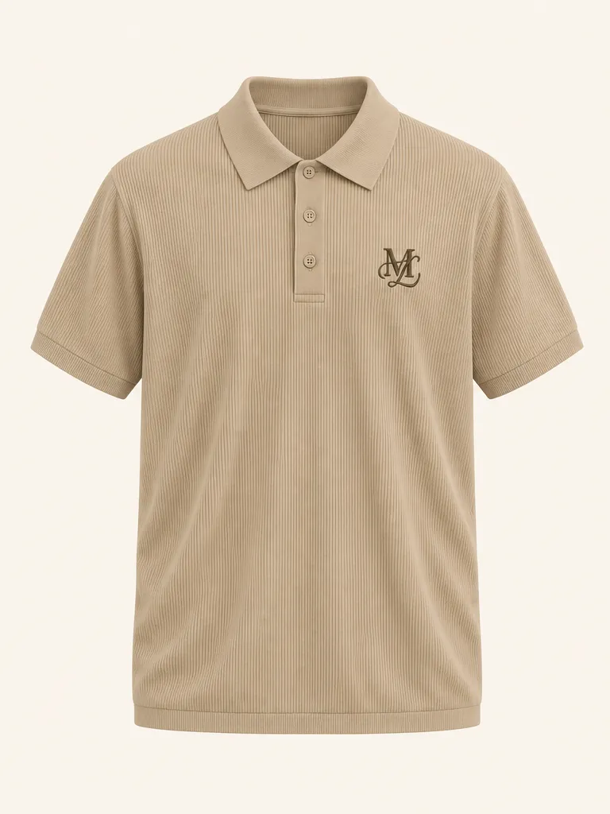
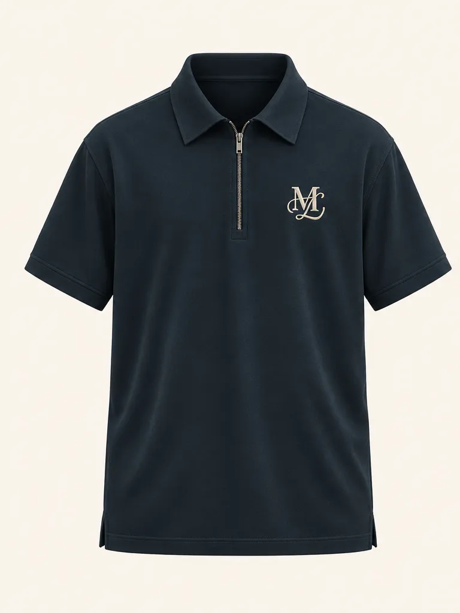
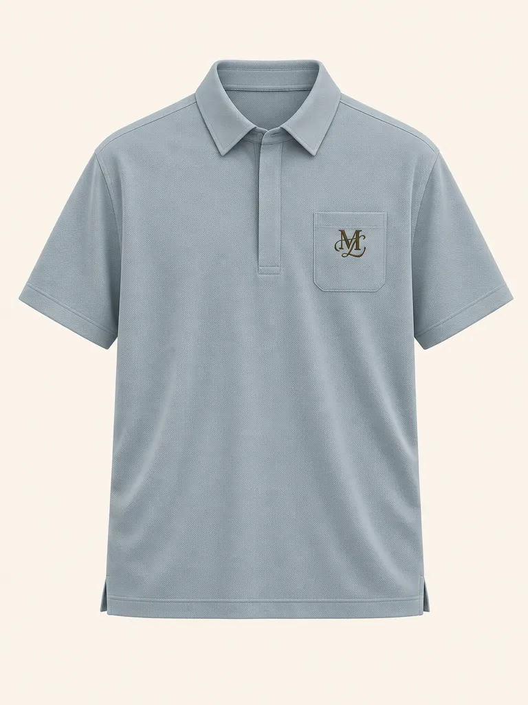
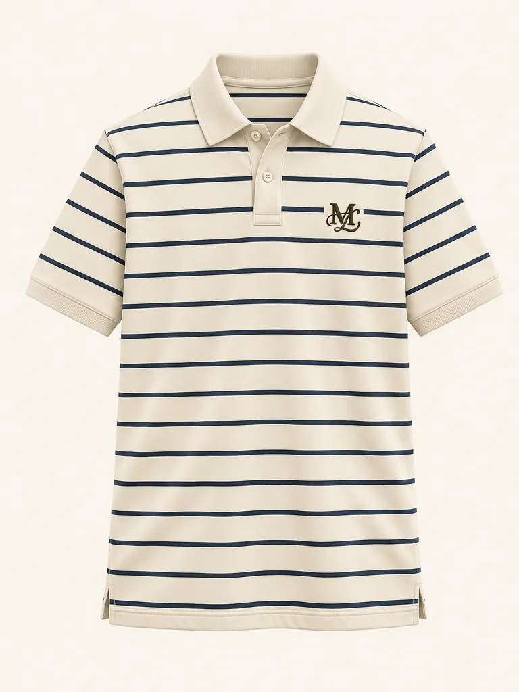
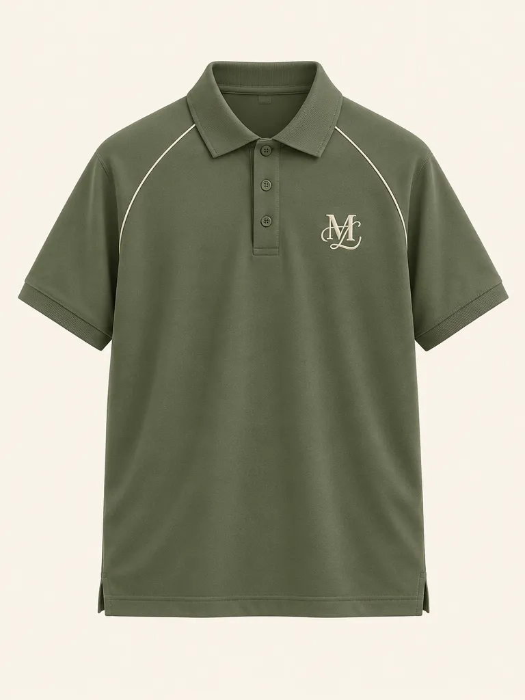
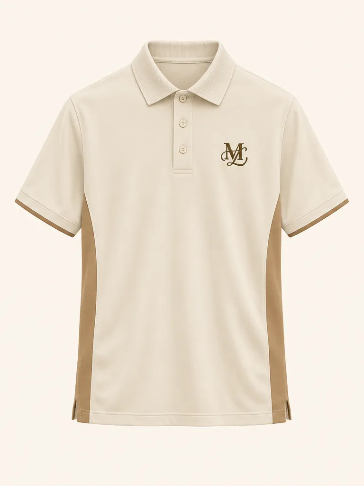
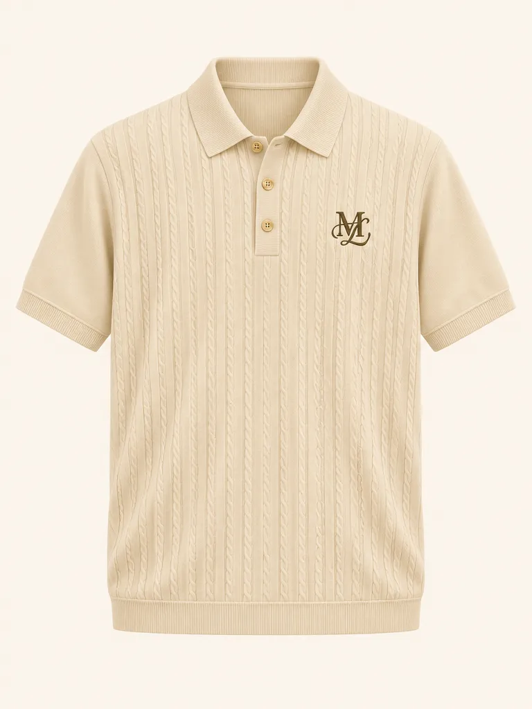

01 / MILO POLO
Heritage Piqué Polo
Polo piqué cổ bẻ, nẹp hai nút và bo tay gọn; lựa chọn thanh lịch cho trang phục hằng ngày.
Trắng ngà
Cổ áo gọn gàng. Chất liệu có chiều sâu. Logo ML thêu nhỏ. Mười cách thể hiện nét lịch sự và trưởng thành, trong bảng màu điềm đạm của Milo.
Bộ thiết kế AI · Chưa mở bán. Chọn từng màu và mặt áo để xem đủ bộ ảnh. Giá bán, giá vốn, size và tồn kho chưa được chốt; hình ảnh và chất liệu thể hiện định hướng thiết kế, chưa phải ảnh hoặc thông số hàng hóa thực tế.

Polo piqué cổ bẻ, nẹp hai nút và bo tay gọn; lựa chọn thanh lịch cho trang phục hằng ngày.
Trắng ngà

Cổ mở Riviera không nút, thân dệt mịn và gấu bo nhẹ, mang vẻ thư thái nhưng chỉn chu.
Yến mạch

Hai đường viền mảnh ở cổ và bo tay, nẹp ba nút, gợi tinh thần câu lạc bộ cổ điển.
Xanh navy

Bề mặt gân dọc nhỏ kết hợp cổ bẻ và nẹp ba nút, tạo phom gọn gàng, trưởng thành.
Cát

Nẹp khóa kéo ngắn cùng cổ bẻ đứng phom, thân interlock trơn và tay may gọn, lịch sự theo cách hiện đại.
Xanh mực

Cổ bẻ sắc gọn, nẹp nút ẩn và túi ngực thêu ML; thiết kế dành cho những bộ phối chỉn chu.
Xanh nhạt

Kẻ ngang Breton tiết chế, cổ và nẹp trơn tạo sự cân bằng cho phong cách lịch lãm ven biển.
Ngà kẻ navy

Đường raglan viền mảnh tạo dấu ấn kín đáo, kết hợp cổ bẻ và nẹp ba nút lịch sự.
Xanh olive

Mảng phối dọc hai bên thân và bo tay tương phản nhẹ, làm mới áo polo trong bảng màu điềm đạm.
Ngà phối camel

Họa tiết dệt vặn thừng nhỏ, cổ bẻ ba nút và bo gấu tinh tế, gợi nét old money kín đáo.
Kem